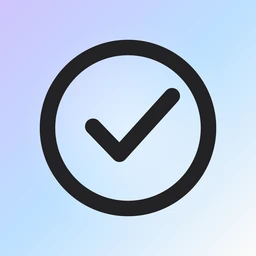
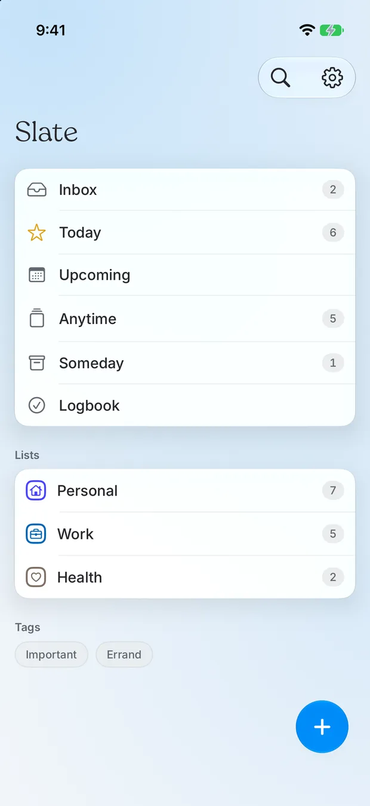

Productivity
Slate
Plan with “When,” not just “Due.”
iPhone · iPad · Mac · Vision Pro · Watch

The app
Plan with “When,” not just “Due.”
A to-do app that separates the day you mean to do something from the day it is actually due. Most task apps collapse the two, and that is the distinction that decides whether your list stays honest.
Areas, projects, and a today view that organises itself. The only permissions it asks for are read-only calendar access and notifications, both optional. No location, no health data, no analytics.
Features
What it actually does.
“When” kept separate from “Deadline”
Areas and projects
Private CloudKit sync
Two permissions, both optional
Privacy
No accounts and no trackers. Your to-dos live on your device and sync only through your own private iCloud; nothing else is uploaded, and the calendar and photo features are read on-device only.
StorageOn device
SwiftData in the app group, mirrored to private CloudKit
AnalyticsNone
No analytics of any kind.
Third partiesNetwork
Apple iCloud (CloudKit) — when sync is on, your to-dos are mirrored to your own private iCloud database, which only you can read; Apple stores it under your Apple Account and it can be turned off in Settings; Tally — only if you choose to open a feedback form in Settings, the link carries the app version, build, OS version and device model so reports are actionable; nothing is sent unless you submit the form